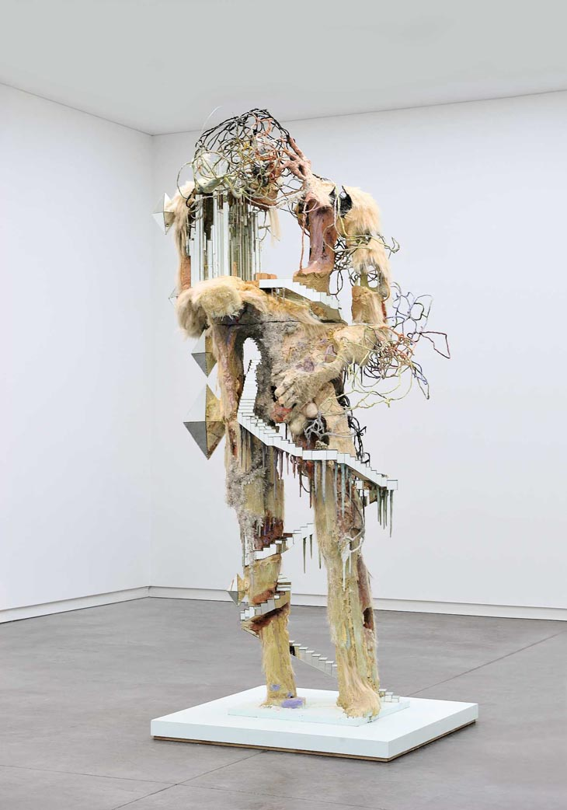

Rally Princesa de Asturias

Hamlet: Jovellanos

Jazz en Poniente

Memoria Cultural Gijón

Gijón vibró con la 62ª edición. Los tramos de montaña asturianos pusieron a prueba a los mejores pilotos del país. Un éxito de público sin precedentes en el puerto.
Lleno absoluto en las tres funciones. La crítica destacó la arriesgada propuesta visual y el talento del elenco local que elevó el clásico de Shakespeare.
Un festival íntimo sobre la arena de Gijón que reunió a los mejores exponentes del jazz nacional bajo la luz de la luna y el sonido del mar.
Muestra colectiva en La Laboral que exploró nuevos materiales industriales, convirtiendo el patio central en un museo de acero y hormigón.